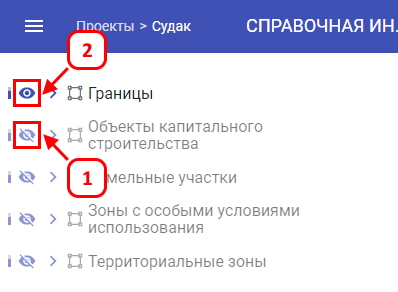
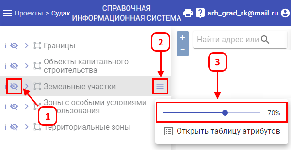
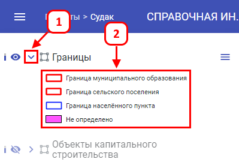
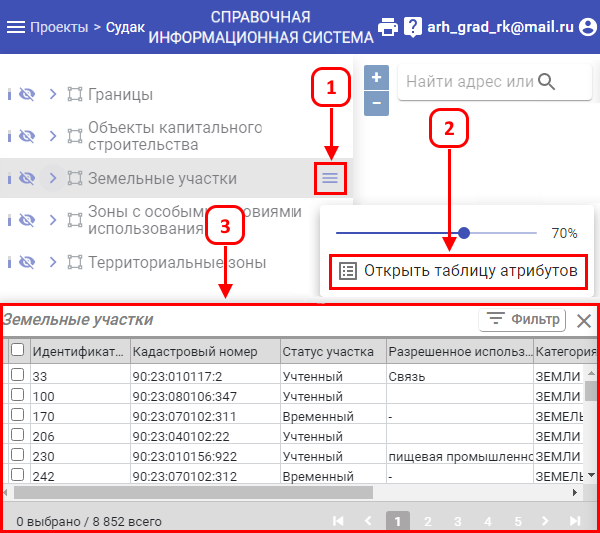

С левой стороны расположена панель со всеми имеющимися слоями по данному проекту.
Для управления отображением слоя применяется «глазик» / .
Для того чтобы отобразить слой на карте, требуется нажать ЛКМ на «перечеркнутый глазик », после этого слой отобразится на карте (1). Для отключения слоя требуется нажать на «видимый глазик » (2).

Уровень прозрачности слоев по умолчанию установлен на 70%. При необходимости можно управлять прозрачностью каждого слоя.
Для изменения уровня прозрачности включённого слоя на карте требуется:

Для того чтобы отобразить легенду слоя, требуется навести мышь на слой и нажать на «Стрелочка » (1). После чего, под выбранным слоем отображается легенда с обозначениями (2).

Для вызова таблицы атрибутов требуется:
